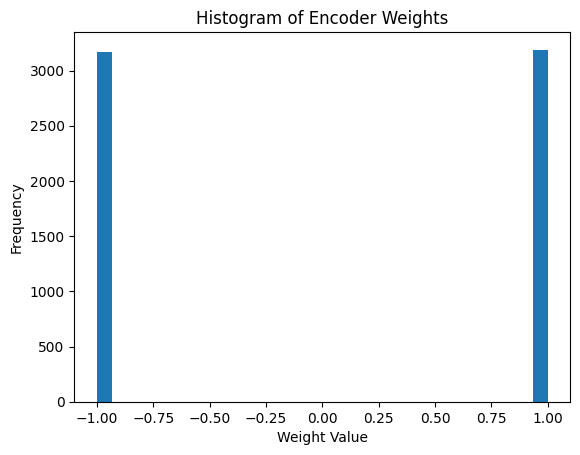

%load_ext autoreload
%autoreload 2
import os
import sys
module_path = os.path.abspath(os.path.join('../')) # or the path
sys.path.append(module_path)
import itertools
import pandas as pd
import numpy as npA2D Encoder
# prepare two-moon data
from sklearn.datasets import make_circles, make_classification, make_moons
from sklearn.model_selection import train_test_split
X,y = make_moons(n_samples=200,noise=0.1, random_state=0)
X_train, X_test, y_train, y_test = train_test_split(X, y, test_size=0.4, random_state=42)
from sklearn.pipeline import make_pipeline
from sklearn.preprocessing import MinMaxScaler, Normalizer
mm = make_pipeline(MinMaxScaler(), Normalizer())
X_train = mm.fit_transform(X_train)
X_test = mm.transform(X_test)# fit the model
from sklearn.linear_model import SGDClassifier
from sklearn.metrics import classification_report
from sklearn.metrics import accuracy_score
clf = SGDClassifier(loss="log_loss", alpha=0.01, max_iter=200, fit_intercept=False, penalty=None)
# baseline
clf.fit(X_train,y_train)
# accuracy on test
y_pred = clf.predict(X_test)
print(classification_report(y_test, y_pred))
acc = accuracy_score(y_test,y_pred)
print('acc is: ', acc) precision recall f1-score support
0 0.87 0.87 0.87 46
1 0.82 0.82 0.82 34
accuracy 0.85 80
macro avg 0.85 0.85 0.85 80
weighted avg 0.85 0.85 0.85 80
acc is: 0.85# with Fourier features
dim_in = X.shape[1]
dim_feat = 100
Phi = samples = np.random.normal(0, 1, size=(dim_in,dim_feat))
print(Phi.shape)
X_train_fourier = np.matmul(X_train,Phi)
X_test_fourier = np.matmul(X_test,Phi)
clf = SGDClassifier(loss="log_loss", alpha=0.01, max_iter=200, fit_intercept=False, penalty=None)
# baseline
clf.fit(X_train_fourier,y_train)
# accuracy on test
y_pred = clf.predict(X_test_fourier)
#print(classification_report(y_test, y_pred))
acc = accuracy_score(y_test,y_pred)
print('acc is: ', acc)(2, 100)
acc is: 0.8625# implement sigmoid
def sigmoid(z):
return 1/(1 + np.exp(-z))
def quantile_tiles(x,phi, tau):
dim_sample = x.shape[0]
dim_in = phi.shape[0]
dim_feat = phi.shape[1]
tau = np.reshape(tau,(1,dim_feat))
tau_tile = np.kron(np.ones((dim_sample,1)),tau)
x = np.matmul(x,phi)
print('tx shape',x.shape)
print('tau tile shape',tau_tile.shape)
x = sigmoid(x)
z = np.sign(x-tau_tile)
return z
# repeat with quantiles-based random planes
# with Fourier features
dim_in = X.shape[1]
dim_feat = 500
Phi = np.random.normal(0, 1, size=(dim_in,dim_feat))
Tau = np.random.uniform(size=(dim_feat,1))
Tau = 0.5*np.ones((dim_feat,1))
print(Phi.shape, Tau.shape)
X_train_qt = quantile_tiles(X_train,Phi,Tau)
X_test_qt = quantile_tiles(X_test,Phi,Tau)
clf = SGDClassifier(loss="log_loss", alpha=0.01, max_iter=500, fit_intercept=False, penalty=None)
# baseline
clf.fit(X_train_qt,y_train)
# accuracy on test
y_pred = clf.predict(X_test_qt)
#print(classification_report(y_test, y_pred))
acc = accuracy_score(y_test,y_pred)
print('acc is: ', acc)(2, 500) (500, 1)
tx shape (120, 500)
tau tile shape (120, 500)
tx shape (80, 500)
tau tile shape (80, 500)
acc is: 0.8from sklearn.linear_model import LogisticRegression
clf = LogisticRegression(random_state=0).fit(X_train_qt,y_train)
y_pred = clf.predict(X_test_qt)
# accuracy on test
y_pred = clf.predict(X_test_qt)
print(classification_report(y_test, y_pred))
acc = accuracy_score(y_test,y_pred)
print('Logistic Regression Acc is: ', acc) precision recall f1-score support
0 0.86 0.80 0.83 46
1 0.76 0.82 0.79 34
accuracy 0.81 80
macro avg 0.81 0.81 0.81 80
weighted avg 0.82 0.81 0.81 80
Logistic Regression Acc is: 0.8125import torch
import torch.nn as nn
import torch.optim as optim
from encoders import A2DLayer # Import A2DLayer
# Convert X_train and y_train to torch tensors
data = torch.tensor(X_train, dtype=torch.float32)
labels = torch.tensor(y_train, dtype=torch.float32).unsqueeze(1)
# Build the classifier model
class Classifier(nn.Module):
def __init__(self, input_size, hidden_size, **kwargs):
super(Classifier, self).__init__()
self.encoder = A2DLayer(
in_features=input_size,
out_features=hidden_size,
**kwargs # Pass A2DLayer parameters as kwargs
)
self.classifier = nn.Sequential(
nn.Linear(hidden_size, 1)
)
def forward(self, x):
x = self.encoder(x)
x = self.classifier(x)
return x
# Define A2DLayer parameters
a2d_params = {
'pdf': 'normal',
'sign_fn': 'sign',
'cdf_fn': 'sigmoid',
'quantile_tx': True,
'trainable': False
}
# Instantiate the model with A2DLayer parameters
model = Classifier(
input_size=data.shape[1],
hidden_size=53,
**a2d_params # Pass the params here
)
# Define loss function and optimizer
criterion = nn.BCEWithLogitsLoss()
optimizer = optim.Adam(model.parameters(), lr=0.01)
# Train the classifier
epochs = 1000
for epoch in range(epochs):
optimizer.zero_grad()
outputs = model(data)
loss = criterion(outputs, labels)
loss.backward()
optimizer.step()
# Evaluate the model
with torch.no_grad():
predictions = model(data)
predicted_labels = (predictions > 0.5).float()
accuracy = (predicted_labels == labels).float().mean()
print("Accuracy:", accuracy.item())Accuracy: 0.8500000238418579print(model.encoder.linear.weight.data.shape)
print(model.encoder.quantile_offset)
print(model.encoder.linear.weight.grad)torch.Size([53, 2])
Parameter containing:
tensor([0.2907, 0.3856, 0.4245, 0.3512, 0.8714, 0.4984, 0.5657, 0.7834, 0.6861,
0.0517, 0.1318, 0.1054, 0.9273, 0.9573, 0.2083, 0.3755, 0.8536, 0.8480,
0.8226, 0.9240, 0.2844, 0.0992, 0.2829, 0.5051, 0.6585, 0.2649, 0.2331,
0.5146, 0.8997, 0.1091, 0.3032, 0.2742, 0.2760, 0.9678, 0.3407, 0.0245,
0.4351, 0.6848, 0.8341, 0.3727, 0.7516, 0.4429, 0.4294, 0.4515, 0.9848,
0.4258, 0.3188, 0.9324, 0.7759, 0.6392, 0.6881, 0.7893, 0.6236])
Noneprint(model.encoder.linear.weight.grad)Noneimport matplotlib.pyplot as plt
xh = model.encoder(data).numpy()
plt.hist(xh.flatten(), bins=30)
plt.title("Histogram of Encoder Weights")
plt.xlabel("Weight Value")
plt.ylabel("Frequency")
plt.show()
# Evaluate the model
with torch.no_grad():
data_test = torch.tensor(X_train, dtype=torch.float32)
labels_test = torch.tensor(y_train, dtype=torch.float32).unsqueeze(1)
predictions = model(data_test)
predicted_labels = (predictions > 0.5).float()
accuracy = (predicted_labels == labels_test).float().mean()
print("Accuracy:", accuracy.item())Accuracy: 0.8500000238418579